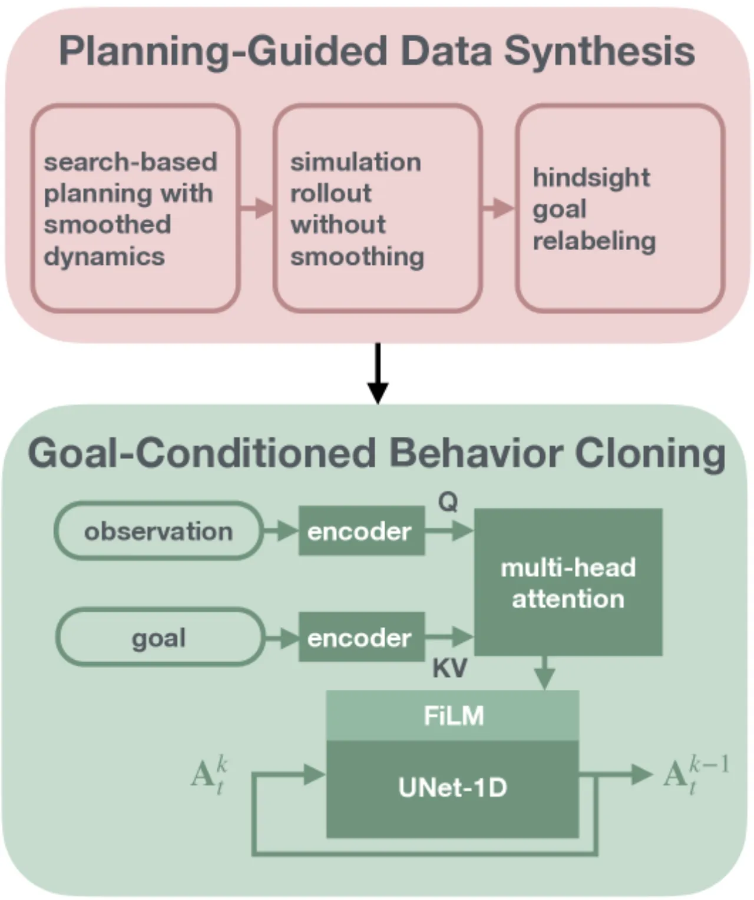
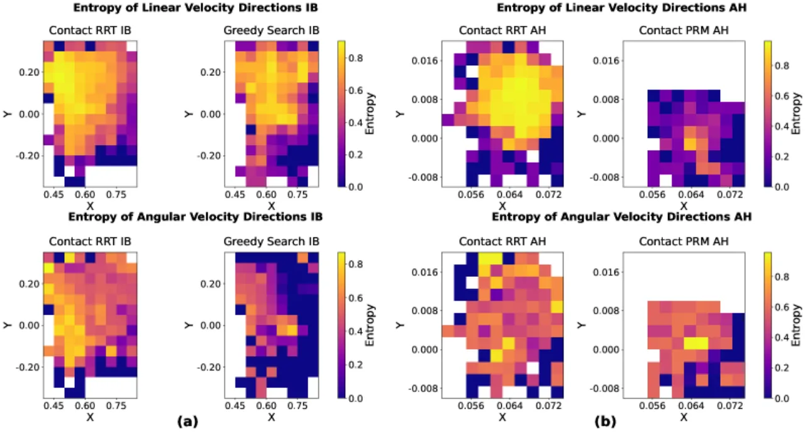
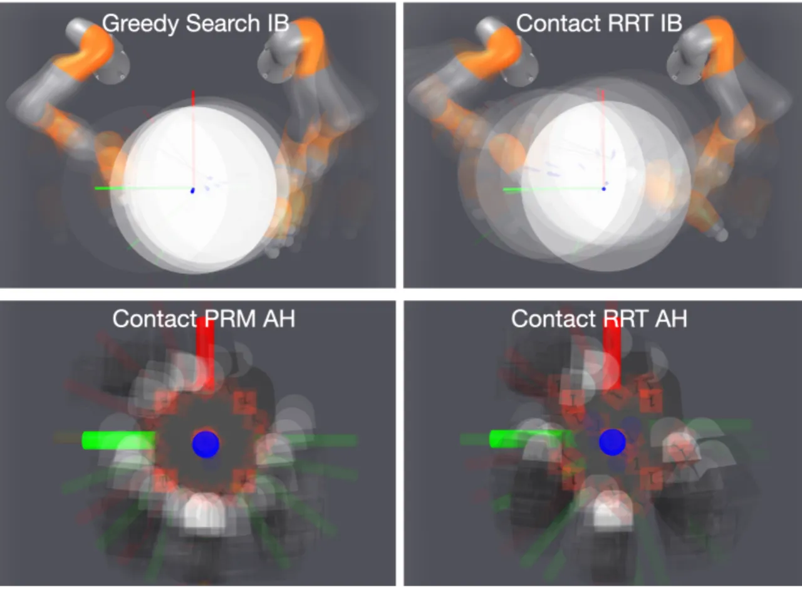
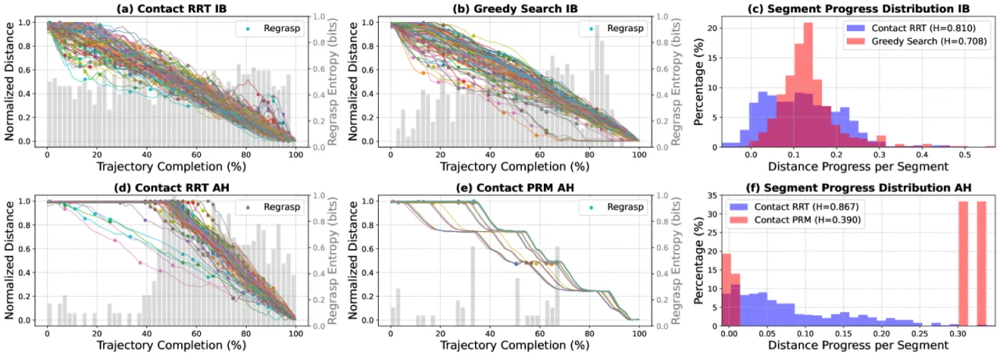

本文揭示了一个关键问题：以 RRT 为代表的流行基于采样的规划器虽然在运动规划中效率极高，却会生成具有不利高熵特性的演示数据，从而严重降低模仿学习策略的性能。作者提出了一套以"演示一致性优先、保持覆盖多样性"为核心的数据生成流程，并结合基于扩散模型的目标条件行为克隆，最终在两个具有挑战性的接触丰富操作任务上实现了零样本硬件迁移。
Behavior Cloning（BC）在机器人操作领域取得了巨大成功，但绝大多数工作依赖人工遥操作收集演示数据。对于需要多接触点协调配合的接触丰富操作任务（如双臂搬运、灵巧手重定向），遥操作接口的局限性使得高质量演示的采集极为困难。
"我们的分析揭示，以 RRT（Rapidly Exploring Random Tree）为代表的流行基于采样的规划器虽然在运动规划中效率极高，却会产生具有不利的高熵特性的演示数据。"
— 原文摘要
核心研究问题：能否用基于模型的规划与优化替代人工遥操作，为接触丰富的灵巧操作任务生成训练数据？RRT 等基于采样的规划器真的适合作为 BC 的数据来源吗？

作者从三个维度量化了演示熵：

作者提出一套以一致性优先的数据生成流程，结合为接触操作定制的低熵规划器与基于扩散模型的目标条件 BC 框架，以实现从规划数据到可部署策略的完整通道。
RRT 的核心机制是通过随机采样在状态空间中快速探索，这赋予了它出色的全局覆盖能力，但同时导致：对同一起始状态可能产生多条截然不同的解路径，聚合后形成高熵数据集。此外，RRT 的分叉探索方式使得接触切换（regrasp）的时机高度不确定。
对于双臂圆柱体旋转任务，作者设计了一种贪婪搜索规划器：在不采样子目标的情况下，迭代求解接触优化问题；仅在遭遇关节极限时才采样新的抓取姿态。该规划器以接触稳定性为首要目标，确保每一步都朝着目标方向稳步推进，从而产生低熵、单调收敛的演示。
对于 16-DoF 灵巧手方块重定向任务，作者使用概率路线图（PRM）规划器：以 24 个标准朝向作为图节点，通过预计算的 primitives（PitchPlus90、YawPlus45、YawMinus45）连接节点。这种结构"同时保证了完备性与一致性"。部署时采用混合策略（Hybrid Policy）：主策略（1000 条演示训练）执行任意目标重定向，调整策略（5000 条演示训练）负责从最近标准朝向到精确目标朝向的精细调节，两者配合使成功率提升约 10%。

策略学习采用 DDPM（Denoising Diffusion Probabilistic Model） 作为动作头，输入历史状态序列与目标状态，输出动作序列（而非单步动作），以提升时序一致性。通过 Feature-wise Linear Modulation（FiLM） 对观测与目标进行条件化，再将嵌入融合到去噪网络的各层中。训练使用 AdamW 优化器，学习率 1×10⁻⁴，批大小 256，训练 50 个 epoch。此外引入 Hindsight Goal Relabeling，大幅扩充有效训练样本。

实验覆盖两个接触丰富操作任务：IiwaBimanual（两台 7-DoF 机械臂协作旋转直径 0.6m 圆柱体 180°）和 AllegroHand（16-DoF 灵巧手将 6cm 立方体重定向到目标朝向）。在仿真中全面评估，并在真实硬件上进行零样本迁移测试。
评价指标：在 100 个随机初始位置上测试，位置误差 < 0.1m 且朝向误差 < 0.2 rad 视为成功。
| 规划器 / 数据集 | 100 条演示 | 500 条演示 | 1000 条演示 | 5000 条演示 |
|---|---|---|---|---|
| Contact-RRT | 44% | 63% | 88% | 84% |
| Greedy Search | 99% | 98% | 99% | 100% |
核心发现：Greedy Search 仅需 100 条演示即可达到 99% 成功率，而 Contact-RRT 即使增加到 5000 条演示也只能达到 84%，甚至低于 1000 条演示时的 88%，表明高熵演示不仅样本效率低下，且增大数据量并不能有效缓解问题。
仿真评估取最优 checkpoint 结果；真机硬件测试为零样本迁移（无额外微调）。
| 任务 | 变体 | 仿真成功率 | 位置误差 | 朝向误差 | 真机成功率 |
|---|---|---|---|---|---|
| AllegroHand | Easy-Unified | 74% | 1.7±2.0 cm | 31.5±38.3° | — |
| AllegroHand | Hard-Hybrid | 68% | 1.9±1.1 cm | 28.1±31.5° | 62.5% (15/24) |
| AllegroHand | Easy-Hybrid | — | — | — | 62.5% (15/24) |
| IiwaBimanual | — | 99% | 1.8±0.5 cm | 2.9±3.1° | 90% (18/20) |
对于 AllegroHand 任务，引入调整策略（Adjustment Policy）使最终成功率提升约 10%。主策略负责粗调，从任意初始朝向到达最近的标准朝向；调整策略负责精调，从标准朝向到精确目标朝向。两者的分工使策略在 Hard 变体（目标均匀采样自 SO(3)）上也能达到稳健表现。
真机与仿真间存在系统误差：物体实际质量 1.25 kg（仿真为 1.0 kg），实际直径 0.59m（仿真为 0.6m）。尽管如此，IiwaBimanual 真机成功率达 90%，AllegroHand 达 62.5%，均实现了零样本硬件迁移，验证了低熵演示对策略泛化能力的积极作用。
RRT 规划器在全局路径规划方面表现优异，但其生成的演示具有"不利的高熵特性（unfavorably high entropy）"，在低数据量下尤其难以学习。即使增加到 5000 条演示，Contact-RRT 的成功率仍低于 Greedy Search 使用 100 条演示时的水平，揭示了采样随机性与 BC 对一致性需求之间的根本矛盾。
作者明确指出："Generating data entirely from simulation comes with its own limitations." 当前方法不适用于涉及非刚体物体（如柔性材料、布料）的操作任务——这类物体的接触动力学目前既无法被真实地仿真，也无法被有效规划。
AllegroHand 任务的失败案例主要发生在"物体落入训练数据中未出现过的配置（configurations not present in training data）"时，表明策略对超出训练分布的状态泛化能力有限。这一问题与规划器的覆盖范围直接相关。
IiwaBimanual 策略偶尔表现出"chattering-like behaviors where the policy switches between different action modes"，即策略在多种动作模式之间快速切换，导致执行不稳定。这可能源于扩散策略在多模态动作分布下的随机性。
"Current planner unable to find solutions from arbitrary system configurations"，导致无法应用 DAgger 等需要从任意状态恢复的在线数据增强方法。这将方法局限于离线 BC 范式，限制了进一步提升性能的可能性。
真机实验中存在不可忽视的模型失配：物体质量差异（真机 1.25 kg vs. 仿真 1.0 kg）以及几何尺寸差异（真机直径 0.59m vs. 仿真 0.6m）。当前成功依赖于策略对这些小偏差的鲁棒性，更大的物理差异可能导致性能显著下降。